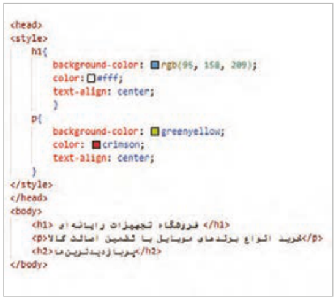
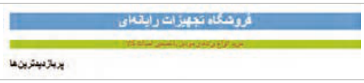
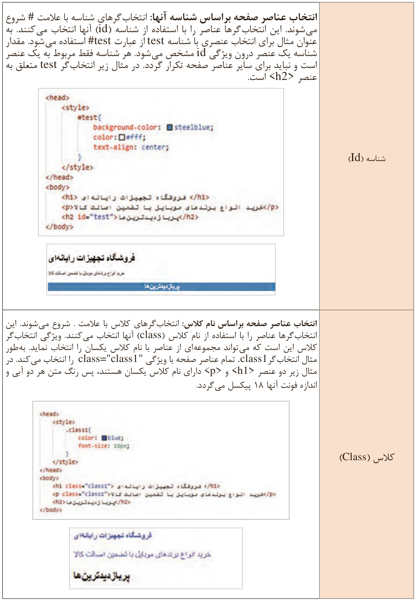
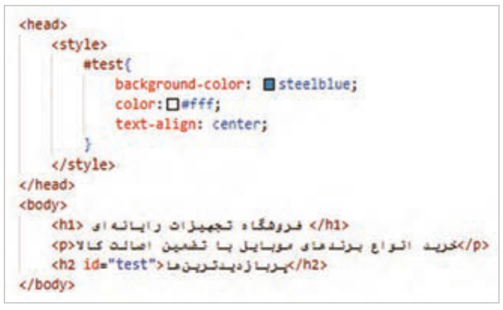
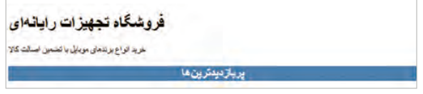
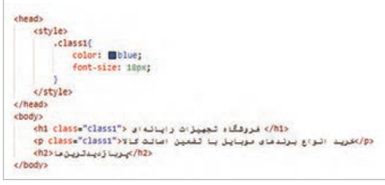
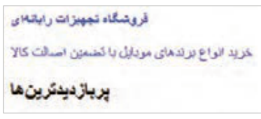
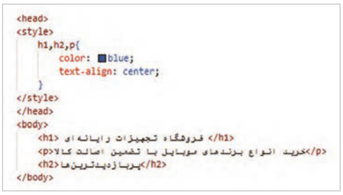
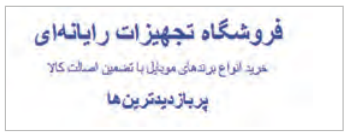
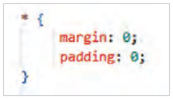

طراحی ظاهر عناصر (رنگها، پس زمینهها، شفافیت و خط دور)
CSS دارای ویژگیهای مختلفی در زمینه تنظیم ظاهر عناصر است. این ویژگیها برای تعیین رنگ متن، رنگ زمینه، تصویر پسزمینه، کنترل تصویر پسزمینه، شفافیت و خط دور عناصر بهکار میروند. در ادامه به برخی از این ویژگیها اشاره میشود.
color و background-color: برای تعیین رنگ متن و زمینه عناصر بهکار میرود. برای هر دو ویژگی فوق میتوان از نام رنگ، کد هگزادسیمال رنگ یا کد RGB استفاده نمود.
opacity: شفافیت عناصر توسط این ویژگی تعیین میشود. مقدار opacity با عددی بین 0 و 1 تعیین میشود. مقادیر پایین این ویژگی باعث کاهش شفافیت عنصر و مقادیر نزدیک 1 باعث افزایش شفافیت عنصر میشود.
background-image: برای تعیین تصویر پسزمینه بهکار میرود. برای مقداردهی به این ویژگی ابتدا عبارت url و سپس نام تصویر داخل پرانتز نوشته میشود.
background-repeat: تصاویری که پهنای صفحه را پوشش ندهند، تکرار میشوند. برای تنظیم نحوه تکرار یا عدم تکرار تصویر از این ویژگی استفاده میشود که دارای مقادیر مختلفی مانند no-repeat، repeat-x، repeat-y و ... است.
background-size: اندازه تصویر پس زمینه را تعیین میکند. این ویژگی مشخص میکند که تصویر پسزمینه با چه ابعادی داخل عنصر نمایش داده شود. برای پوشش پهنای صفحه، بدون تکرار تصویر، از این ویژگی با مقدار cover استفاده میشود.
background-position: برای تنظیم محل نمایش تصویر پسزمینه بهکار میرود و دارای مقادیر مختلفی مانند center، left، right، left top، right bottom و غیره است.
صفحه ۱۲۲
background-attachment: اگر تصویر زمینه بزرگتر از محدوده نمایش باشد، میتوان با اسکرول کردن، بخشهای پایینتر تصویر را به نمایش گذاشت. برای ثابت نگه داشتن تصویر در هنگام اسکرول صفحه، از این ویژگی با مقدار fixed استفاده میشود.
border: عناصر صفحه میتوانند همراه با یک خط دور نمایش داده شوند. ایجاد خط دور توسط ویژگی border صورت میگیرد. مقادیر این ویژگی به ترتیب ضخامت خط دور، نوع خط دور و رنگ آن را تعیین میکنند.
border: 1px solid gray;
border-radius: برای گرد شدن گوشهها از این ویژگی استفاده میشود و مقدار آن میتواند برحسب پیکسل یا درصد باشد:
border-radius:10px;
صفحه ۱۲۳
انتخابگرهای CSS
عنصر یا مجموعه عناصری که استایل CSS برای آنها نوشته میشود، انتخابگر نامیده میشوند. CSS دارای انواع مختلفی از انتخابگرها شامل انتخابگرهای ساده، ترکیبی، شبهکلاس، شبه عنصر و ویژگی است که در این بخش به آنها پرداخته میشود.
انتخابگرهای ساده (Simple)
این انتخابگرها از اسامی تگها، شناسهها، کلاسها و علامت * برای انتخاب عناصر استفاده میکنند. انواع انتخابگرهای ساده در جدول ۸ آمده است:
جدول ۸: انواع انتخابگرهای ساده
نوع انتخابگر
عملکرد
عنصر (Element)
انتخاب عناصر صفحه بر اساس نام تگ، مانند h2، p، table، body و ...


صفحه ۱۲۴





صفحه ۱۲۵
نوع انتخابگر
عملکرد
گروهی(Group)
انتخاب گروهی از عناصر: انتخابگرهای گروهی مجموعهای از قوانین CSS را به چند عنصر اختصاص میدهند. در یک انتخابگر گروهی، نام عناصر به همراه کاما نوشته میشود. در مثال زیر عبارت h1, h2,p یک انتخابگر گروهی محسوب میشود. قوانین بالا به تگهای <h1>، <h2> و <p> اعمال میشود. درنتیجه همۀ آنها، آبی و وسطچین میشوند.
سراسری (universal)
انتخاب تمام عناصر صفحه توسط علامت *: در مثال زیر، مقدار حاشیه خارجی (margin) و فاصله داخلی (padding) در تمام عناصر صفحه برابر با صفر تنظیم شده است.



انتخابگر ترکیبی(Combinator)
انتخابگرهای ترکیبی در CSS برای تعریف رابطه ساختاری و موقعیتی میان دو یا چند انتخابگر بهکار میروند. مانند انتخابگر فرزند با نماد > و انتخابگر نوادگان با استفاده از فاصله، عناصری که بهصورت تودرتو نوشته میشوند، رابطه والد و فرزندی پیدا میکنند. بهعنوان مثال عنصر li فرزند عنصر ul است. درنتیجه برای انتخاب عناصر li عبارت ul li یا ul > li استفاده میشود. استفاده از علامت > باعث میشود که محدودۀ تأثیرگذاری به فرزندان مستقیم یک عنصر کاهش یابد.
صفحه ۱۲۶
انتخابگرهای شبهکلاس (Pseudo-class Selectors)
انتخابگرهای شبهکلاس امکان تعیین استایل عناصر را براساس وضعیت، موقعیت یا ویژگیهای پویای آنها فراهم میکند. برخی از این انتخابگرها وابسته به عملکرد کاربر فعال میشوند. شبهکلاسها با علامت : بعد از نام عنصر نوشته میشوند. انتخابگرهای شبهکلاس به شرح زیر هستند:
hover: زمانی فعال میشود که کاربر اشارهگر ماوس خود را بر روی یک عنصر ببرد.
focus: این رویداد زمانی اتفاق میافتد که یک عنصر (معمولاً عناصر فرم) فعال شود و کار امکان تعامل با آن را داشته باشد.
active: زمانی فعال میشود که یک عنصر در حالت فعال قرار گیرد. مانند زمانی که کاربر روی یک دکمه کلیک میکند.
nth-child(): امکان انتخاب فرزندان یک عنصر را بر اساس موقعیت آنها فراهم میکند.
first-child: امکان انتخاب اولین فرزند یک عنصر را برای انتخاب اولین فرزند یک عنصر بهکار میرود.
last-child: برای انتخاب آخرین فرزند یک عنصر بهکار میرود.
صفحه ۱۲۷
انتخابگر ویژگی (Attribute selector)
انتخابگر ویژگی، انتخاب عناصر را بر اساس ویژگیهای آنها انجام میدهد. بهطور مثال برای انتخاب عناصر متنی فرم از انتخابگر input[type="text"] و برای انتخاب عناصری که دارای ویژگی href باشند از انتخابگر [href] استفاده میشود.
Page 121
طراحی ظاهر عناصر (رنگها، پس زمینهها، شفافیت و خط دور)
CSS دارای ویژگیهای مختلفی در زمینه تنظیم ظاهر عناصر است. این ویژگیها برای تعیین رنگ متن، رنگ زمینه، تصویر پسزمینه، کنترل تصویر پسزمینه، شفافیت و خط دور عناصر بهکار میروند. در ادامه به برخی از این ویژگیها اشاره میشود.
color and background-color: set the text color and background color of elements. For both you can use a color name, a hexadecimal color code, or an RGB code.
opacity: sets how transparent an element is. The value of opacity is a number between 0 and 1. Low values make the element more transparent, and values near 1 make it more opaque.
background-image: sets the background image. Its value is written as the word url followed by the image name in parentheses,
background-repeat: images that do not cover the width of the page are repeated. This property sets whether and how the image repeats, with values such as no-repeat, repeat-x, repeat-y, and so on.
background-size: sets the size of the background image, that is, at what size it is shown inside the element. To cover the width of the page without repeating the image, this property is used with the value cover.
background-position: sets where the background image is shown, with values such as center, left, right, left top, right bottom, and so on.
Page 122
background-attachment: if the background image is larger than the visible area, scrolling shows its lower parts. To keep the image fixed while the page scrolls, this property is used with the value fixed.
border: page elements can be shown with a border. Borders are created with the border property. Its values set, in order, the thickness, the type, and the color of the border.
border: 1px solid gray;
border-radius: rounds the corners; its value can be in pixels or percent:
border-radius:10px;
Page 123
CSS selectors
The element or set of elements a CSS style is written for is called a selector. CSS has several kinds of selectors, including simple, combinator, pseudo-class, pseudo-element, and attribute selectors, which this part covers.
انتخابگرهای ساده (Simple)
These selectors use tag names, IDs, classes, and the * sign to select elements. The kinds of simple selectors are listed in Table 8:
Table 8: Kinds of simple selectors
Kind of selector
What it does
Element (Element)
Selects page elements by tag name, such as h2, p, table, body, and so on
Page 124
Page 125
Kind of selector
What it does
Group (Group)
Selects a group of elements: group selectors apply a set of CSS rules to several elements. In a group selector the element names are written with commas between them. In the example below, h1, h2,p is a group selector. The rules above are applied to the <h1>, <h2>, and <p> tags, so all of them become blue and centered.
Universal (universal)
Selecting all page elements with the * sign: in the example below, the outer margin (margin) and inner spacing (padding) of all page elements are set to zero.
انتخابگر ترکیبی(Combinator)
Combinator selectors in CSS define a structural and positional relationship between two or more selectors, such as the child selector with the > sign and the descendant selector with a space. Elements written nested inside each other have a parent–child relationship. For example, li is a child of ul, so to select the li elements you write ul li or ul > li. Using the > sign limits the effect to the direct children of an element.
Page 126
انتخابگرهای شبهکلاس (Pseudo-class Selectors)
Pseudo-class selectors let you style elements based on their state, position, or dynamic properties. Some of them become active depending on what the user does. Pseudo-classes are written with a : sign after the element name. The pseudo-class selectors are:
hover: active when the user moves the mouse pointer over an element.
focus: happens when an element (usually a form element) becomes active and the user can interact with it.
active: active when an element is in the active state, for example while the user clicks a button.
nth-child(): selects the children of an element by their position.
first-child: selects the first child of an element.
last-child: selects the last child of an element.
Page 127
انتخابگر ویژگی (Attribute selector)
An attribute selector selects elements by their attributes. For example, to select the text elements of a form the selector input[type="text"] is used, and to select elements that have an href attribute the selector [href] is used.